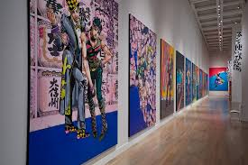
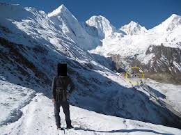

A quick
, and hopefully small,
summary of some things I've read and like
A couple genres I'm fond of in no particular order with examples
- sci-fi
- Just about everything in the SCP wiki
- Supernatural/Fiction
- So many examples, because I almost purely read things that have the supernatural. I'll read realistic fiction, but I'll usually only be interested if it's unrealistic.
- actionnnn in graphic novels and similar things!! RAHHHHHHH
but only if they go beyond just repetitive fighting here have some examples
- Jojo's Bizarre Adventure, Bleach, and JJK all have abilities that represent a part of the self
Series/Stories I'm a fan of (another list)
- If you were to ask me my favorite series, 10/10 times the answer would be Jojo's Bizarre Adventure. I could go on about this series, and name things I like about it. It's weird, it's awesome, blah blah blah you've heard it all before. But have you heard that it's in the Louvre?

- I would definitely consider myself a fan of SCP stories. The SCP wiki is a collection of stories written around a fictional sci-fi foundation that captures and studies anomolous things/beings. The stories aren't all sci-fi too, buuuuut just considering the sci-fi stuff alone that's 9,000+ articles you can read whenever for free.
Here's the guide for newcomers, if you're interested!!
- I like totally forgot to mention comedy stuff so I'll just briefly mention that I'm a big fan of (brace for impact) "The Disasterous Life Of Saiki K" or just Saiki
Currently reading and procrastinating on planning to read
Most of these are SCP stories, just a fun fact
- SCP 001 Proposal - Ouroboros, totally not procrastinating
- Numerous stories about a fictional place called Alagadda (SCP)
- Osamu Dazai's, "The Flowers Of Buffoonery"
- Fyodor Dostoevsky's, "Crime And Punishment"
- "There Is No Antimemetics Division" by qntm which was originally published on the SCP wiki, buuuut because everything on the wiki is Creative Commons, that obviously won't sell, so qntm uses a stand-in foundation, and credits the SCP wiki
Will I[the one writing this] stop procrastinating and get to work on writing already?
Think fast

This is just a test paragraph.